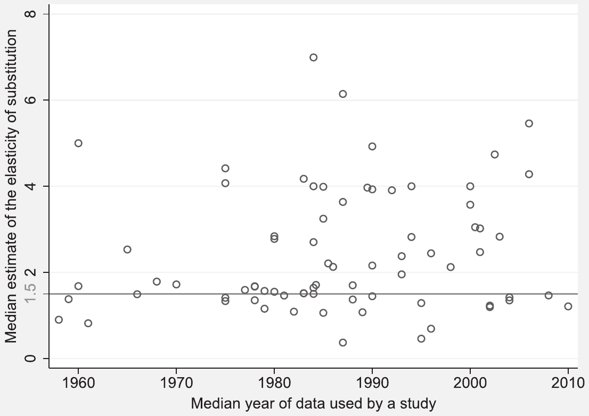
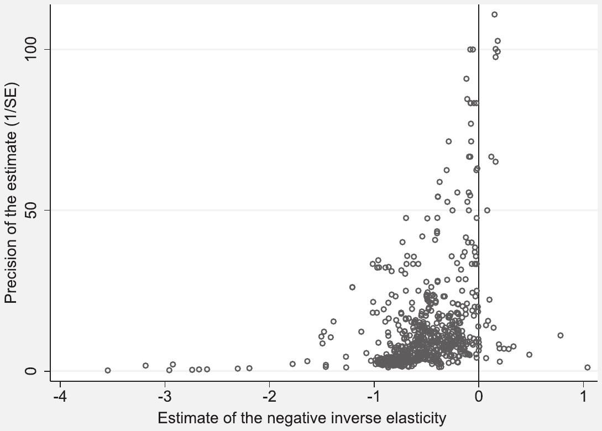
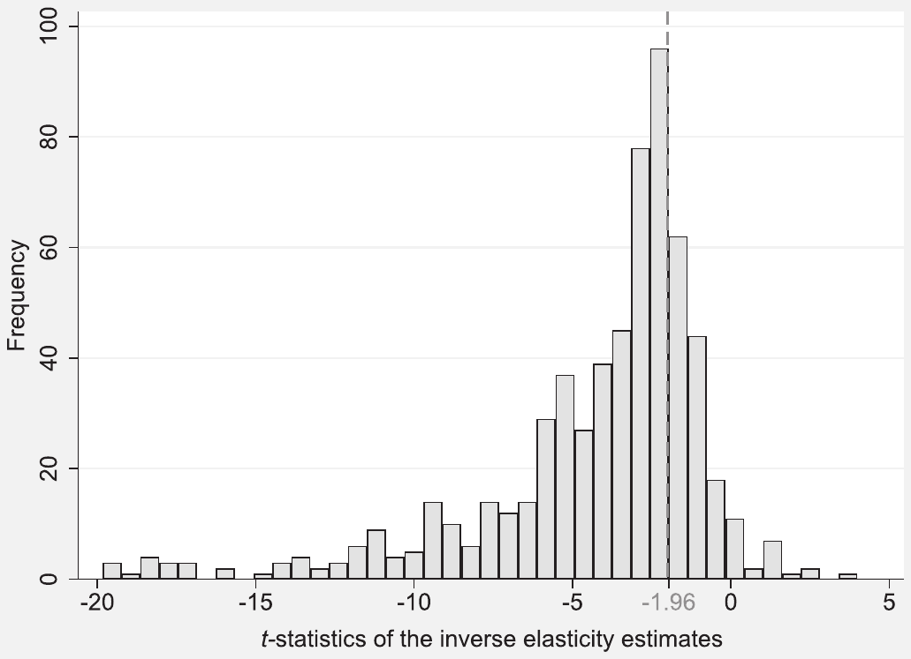
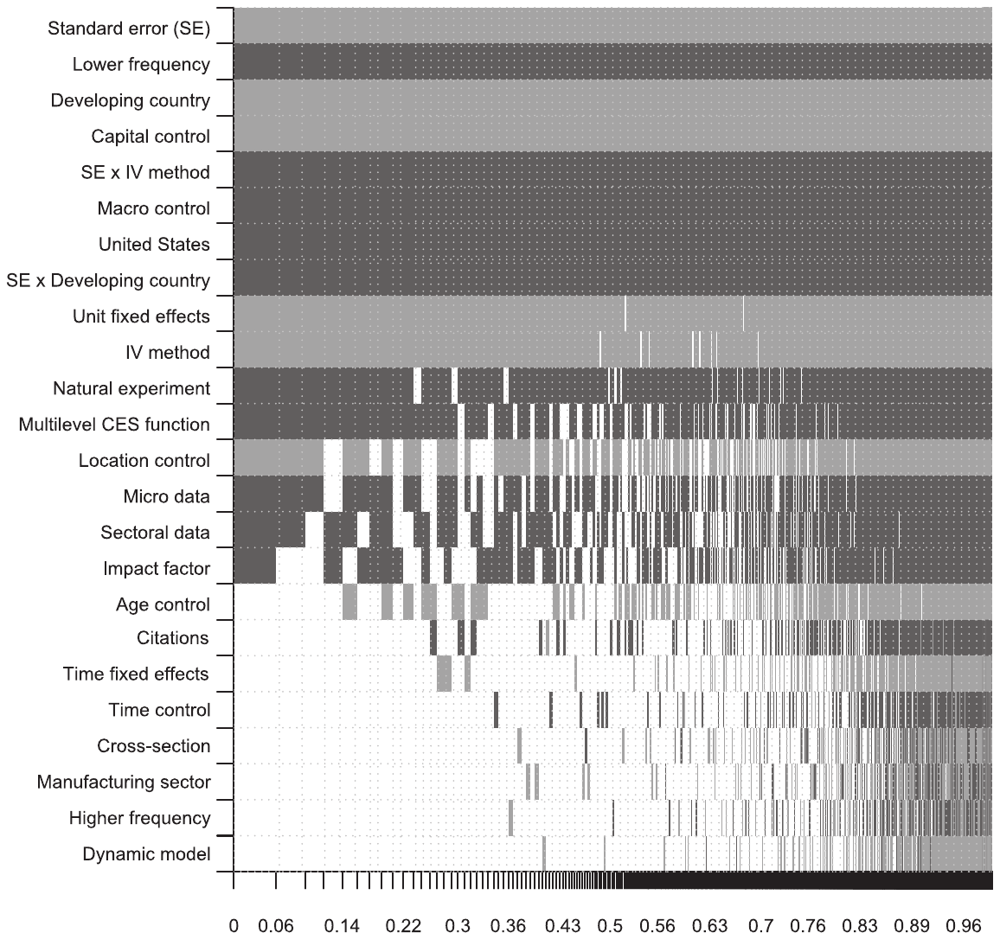

Publication and Attenuation Biases in Measuring Skill Substitution
Tomas Havranek, Zuzana Irsova, Lubica Laslopova, and Olesia Zeynalova (2024), "Publication and Attenuation Biases in Measuring Skill Substitution." Review of Economics and Statistics 106 (5), 1187-1200. https://doi.org/10.1162/rest_a_01227.
Tomas Havranek, Zuzana Irsova, Lubica Laslopova, and Olesia Zeynalova
Havranek: Charles University and Centre for Economic Policy Research; Irsova (corresponding author): Charles University; Laslopova: Anglo-American University; Zeynalova: Charles University.
Received for publication November 24, 2020. Revision accepted for publication June 3, 2022. Editor: Xiaoxia Shi.
Data and code are available at meta-analysis.cz/skill. We thank the Editor (Xiaoxia Shi) and Pedro Bom, Chris Doucouliagos, Dominika Ehrenbergerova, Chishio Furukawa, Sebastian Kranz, Heiko Rachinger, Bob Reed, Tom Stanley, Jan Visek, and two anonymous referees of the Review for their comments, which helped us improve the paper dramatically. Irsova acknowledges support from the NPO Systemic Risk Institute, grant No. LX22NPO5101, funded by the European Union – Next Generation EU (Ministry of Education, Youth and Sports, NPO: EXCELES); Havranek acknowledges support from the Czech Science Foundation (grant No. 19-26812X); Zeynalova acknowledges support from the Czech Science Foundation (grant No. 21-09231S).
A supplemental appendix is available online at https://doi.org/10.1162/rest_a_01227.
Abstract
A key parameter in the analysis of wage inequality is the elasticity of substitution between skilled and unskilled labor. We show that the empirical literature is consistent with both publication and attenuation bias in the estimated inverse elasticities. Publication bias, which exaggerates the mean reported inverse elasticity, dominates and results in corrected inverse elasticities closer to zero than the typically published estimates. The implied mean elasticity is 4, with a lower bound of 2. Elasticities are smaller for developing countries. To derive these results, we use nonlinear tests for publication bias and model averaging techniques that account for model uncertainty.
I. Introduction
The elasticity of substitution between skilled and unskilled workers ranks among the most frequently estimated parameters in labor economics: we found 682 estimates reported in 77 studies. The parameter commands the predictions of the canonical model of skill differentials, especially the effect on the skill premium of a changing ratio of skilled workers and biased technological change (for instance, Katz & Murphy, 1992; Acemoglu, 2002; Ciccone & Peri, 2005). It is also important for other questions, including the usefulness of cross-country heterogeneity in education for explaining differences in labor productivity (Klenow & Rodriguez-Clare, 1997). Unlike many important parameters in economics, for which often little consensus exists and calibrations vary by the order of magnitude, the elasticity of skill substitution is with extraordinary consistency commonly calibrated at 1.5. As Cantore et al. (2017, p. 80) put it: "Most of [the] estimates [of the elasticity] range between 1.3 and 2.5, with a consensus estimate around 1.5." In this paper we show that the literature is instead consistent with an elasticity around 4.
The observation by Cantore et al. (2017) is based on key papers (Katz & Murphy, 1992; Ciccone & Peri, 2005; Autor et al., 2008) but, at first glance, holds for the literature as a whole: the 682 estimates we collect have a mean of 1.8. Nevertheless, figure 1 illustrates that individual studies estimating the elasticity disagree more than what is often acknowledged in the applications of the estimates. Elasticities larger than 1 (suggesting that skilled and unskilled labor are gross substitutes) dominate the literature and also frequently include values around 4. Elasticities smaller than 1 (suggesting that skilled and unskilled labor are gross complements) are not rare. So the literature is consistent with a wide range of calibrations, though of course the first moment is key in informing them. The problem is that the mean estimates reported in many fields of economics are routinely distorted by publication bias (Brodeur et al., 2016; Bruns & Ioannidis, 2016; Card et al., 2018; Christensen & Miguel, 2018; DellaVigna et al., 2019; Blanco-Perez & Brodeur, 2020; Brodeur et al., 2020; Ugur et al., 2020; Xue et al., 2020; Imai et al., 2021; Neisser, 2021; Stanley et al., 2021; Brown et al., 2022; DellaVigna & Linos, 2022; Iwasaki, 2022; Stanley et al., 2022), often by a factor of 2 or more (Ioannidis et al., 2017).
Publication bias stems from the tendency of authors, editors, or referees to prefer statistically significant or theory-consistent results. Negative estimates of the elasticity are inconsistent with the canonical model, and zero or infinite estimates are unintuitive. Few researchers are eager to interpret such estimates, though negative, insignificant, or huge elasticity estimates will appear from time to time given sufficient imprecision in data and methods. The analysis of publication bias in this context is complicated by the fact that while some researchers estimate the elasticity directly, most estimate the (negative) inverse elasticity by regressing the skill premium on the relative supply of skilled labor. The two groups of studies cannot be combined in an analysis of publication bias because the inversion necessary for such a combination violates the assumptions of many tests. Since in most plausible situations the relative supply represents the treatment and the skill premium represents the outcome, in the main text we only focus on the studies estimating the negative inverse elasticity, which are more likely to identify the underlying causal relationship. In the online appendix, we explain in detail why we find direct estimates, yielded by reverse regressions, less persuasive (appendix B), and provide tests of publication bias for these estimates separately (appendix C). The direct estimates are consistent with little to no substitutability between skilled and unskilled labor.
McCloskey and Ziliak (2019) liken the problem of publication bias and p-hacking1 to the Lombard effect in psychoacoustics, in which speakers intesify their vocal effort in response to noise. So, too, can researchers intensify specification searching in response to noise in their data and try a different setup to obtain a negative inverse elasticity larger in magnitude, ideally an estimate significantly different from zero. Most of the techniques we use for publication bias correction (including Ioannidis et al., 2017; Andrews & Kasy, 2019; Bom & Rachinger, 2019; Furukawa, 2020) are explicitly or implicitly based on the Lombard effect and assume that, in the absence of the bias, there is no correlation between estimates and standard errors. The assumption is common but strong, and we show that the correlation exists even among estimates unlikely to suffer from the bias. Consequently we use the inverse of the square root of the number of observations as an instrument for the standard error (Stanley, 2005) and employ tests by Gerber and Malhotra (2008) and Elliott et al. (2022) that do not require the assumption.

We have noted that publication bias has been identified in many fields. In most cases, however, it is probably moderated by attenuation bias in the opposite direction. According to the "iron law of econometrics" (Hausman, 2001), most estimates are biased towards zero because the independent variable is almost always measured with error. The interplay between publication and attenuation biases must be ubiquitous in economics, but to our knowledge has not been explored before. The literature on skill substitution recognizes the measurement error problem, since data on labor supply can be notoriously noisy, and attenuation bias is mentioned frequently (for example, by Katz & Murphy, 1992; Angrist, 1995; Borjas, 2003; Bound et al., 2004; Borjas & Katz, 2007; Autor et al., 2008; Card, 2009; Behar, 2010; Verdugo, 2014; Kawaguchi & Mori, 2016; Bowlus et al., 2022). A classical measurement error can arise in the relative labor supply for at least three reasons. First, survey responses may contain noise. Second, migrants' degrees may be incomparable to natives' degrees due to cross-country differences in the quality of the educational system. Third, the mapping from degrees to skills may be noisy due to time differences in the quality of education and selection into student cohorts. We exploit the fact that part of the literature uses instrumental variables (IV) to address the attenuation bias and other endogeneity biases, while other studies either use simple OLS or have access to arguably exogenous variation in relative labor supply (natural experiments). The differences in results reported for studies based on OLS, IV, and natural experiments are informative on the extent of attenuation bias.
Our results are consistent with both publication and attenuation bias. After correcting for the former, the estimated negative inverse elasticity declines in magnitude from the reported mean of −0.6 to an interval between −0.3 and 0.1, depending on the publication bias correction method. Concerning the latter, the publication bias corrected mean estimates are close to zero for both OLS and natural experiments, but around −0.25 for IV. Under the assumption that the instrumental variables in the literature are generally specified well, this result suggests that attenuation bias or other endogeneity biases are important on average (the difference between OLS and IV is substantial) and that attenuation bias in particular matters (the difference between IV and natural experiments is substantial, too). Our preferred estimate of the mean elasticity is thus 4, a value approximately corrected for both publication and attenuation bias.
The results are corroborated by a model that controls for 24 characteristics that reflect the context in which the estimates were obtained (for example, variable definition, data characteristics, design of the production function, estimation technique, and publication characteristics). To address the resulting model uncertainty we use Bayesian (Raftery et al., 1997; Eicher et al., 2011) and frequentist (Hansen, 2007; Amini & Parmeter, 2012) model averaging, both superbly surveyed in Steel (2020). For the former, we also employ the dilution prior (George, 2010) that alleviates potential collinearity. Finally, we create a hypothetical study that uses all estimates in the literature but assigns more weight to those that are better specified (using Card, 2009; Autor, 2014; and Carneiro et al., 2022, as benchmarks). The implied mean estimate of the elasticity is 4 with the 95% credible interval of (2, 20). The implied elasticity for the United States is 6, and for developing countries it is 2. We also find that publication bias is smaller for IV estimates and developing countries, likely because for them the underlying inverse elasticity estimates are significantly distinct from zero even in the absence of publication selection.
The remainder of the paper contains an analysis of publication bias (section II) and heterogeneity (section III); attenuation bias is analyzed in both sections. The online appendix provides details on the dataset and estimation of the elasticity (appendix A), discussion of the studies estimating the elasticity directly (appendix B), additional material on publication bias analysis (appendix C), additional material on heterogeneity analysis (appendix D), and diagnostics and robustness checks of the Bayesian model averaging analysis (appendix E). Data and code are available at meta-analysis.cz/skill.
II. Publication Bias
An intuitive quality of the elasticity of substitution between skilled and unskilled labor is its nonnegativity. As Kearney (1997, p. 33) remarks on his negative estimates: "The implied coefficients . . . violate standard economic theory." Some researchers, such as Bowles (1970, p. 73) "exclude [negative estimated] values [of the elasticity] . . . as implausible on a priori grounds." As we have noted, we focus on studies that estimate the (negative) inverse elasticity. An inverse elasticity of zero, implying infinite elasticity of substitution, is theoretically possible but often deemed implausible and rarely interpreted. What follows is a tendency in the literature to discriminate against positive and insignificant values of the negative inverse elasticity. Hence the mean estimate of the negative inverse elasticity is probably biased towards a negative value larger in magnitude. Such publication bias is natural, inevitable, and does not require any ulterior motives on the side of authors, editors, or referees. It is a task for those who review and interpret the literature to correct for the bias. As far as we know, no one has attempted to do so in the case of the elasticity of skill substitution.
Most tests of publication bias assume that in the absence of the bias there is no correlation between reported estimates and their standard errors. The correlation can capture publication bias for two reasons. First, researchers (or editors or referees) may prefer statistically significant results. Given some imprecision in their data and methods, researchers may try, for example, different combinations of control variables until they obtain an estimate large enough to offset the standard error. Second, researchers may prefer an intuitive sign of the estimates and discard those with the opposite sign. Then correlation between estimates and standard errors arises due to heteroskedasticity: with lower precision, estimates will be more dispersed on both sides of the underlying mean elasticity. When positive estimates of the negative inverse elasticity are discarded, a regression of estimates on standard errors will yield a negative slope coefficient.
It is helpful to evaluate the relationship visually using the so-called funnel plot: a scatter plot of estimates on the horizontal and their precision (1/SE) on the vertical axis. Based on the intuition described in the previous paragraph, an asymmetry of the funnel plot suggests publication bias, and the top of the funnel serves as an indication of the underlying mean elasticity corrected for the bias. This is the case because under the assumption that all studies estimate the same underlying elasticity the most precise estimates are likely to be close to the underlying mean; moreover, because of their high precision they tend to be highly significant and less prone to publication bias. Figure 2 shows evidence consistent with implicit or explicit discrimination against estimates with the unintuitive (positive) sign. The most precise estimates are concentrated around zero, which is consistent with perfect substitutability between skilled and unskilled labor.
We use two groups of tests more formal than the funnel plot. First, we regress estimates on their standard errors and, to address heteroskedasticity, weight the regressions by inverse variance in the spirit of Stanley (2008), Doucouliagos and Stanley (2013), and Stanley and Doucouliagos (2015). Second, we use recent techniques that do not rely on the linearity assumption. Regarding the linear meta-regression, a nonzero estimated slope suggests publication bias. Under the assumption that publication selection is a linear function of the standard error and there is no heterogeneity in the literature, the intercept can be interpreted as the true mean elasticity corrected for the bias (the top of the funnel). The linearity assumption, however, cannot be expected to hold in general, as explained by Andrews and Kasy (2019) in the appendix to their paper (pp. 30–31).

Regarding nonlinear models, the technique with the most rigorous foundations is the selection model of Andrews and Kasy (2019), which estimates the probability of a result being reported and uses the probability to re-weight the observed distribution of results. We have to specify the thresholds for the t-statistic associated with changes in publication probability, and we choose −1.96, 0, and 1.96.2 We assume that effects have a t-distribution and we cluster standard errors at the study level. The other nonlinear specification that we employ is the endogenous kink model by Bom and Rachinger (2019), which builds on Stanley and Doucouliagos (2014). It assumes that the relation between estimates and standard errors is linear up to a certain point until when precision is high enough for all estimates to be published and the relation disappears. The endogenous kink technique represents the latest incarnation of tests based directly on the funnel plot.
While the nonlinear techniques do not use the problematic assumption that publication selection is a linear function of the standard error, they share the strong assumption that estimates and standard errors are independent or at least uncorrelated in the absence of bias. Andrews and Kasy (2019) state the independence assumption explicitly, while the endogenous kink technique implicitly assumes that more precise estimates are less biased and closer to the true value.3 The assumption is unlikely to hold in economics because data and method choices can influence both estimates and standard errors systematically. Table C6 in the online appendix shows that estimates and their standard errors are correlated even among estimates with a p-value below 0.005, where publication bias is less likely. The correlation appears in most cases even if we divide the literature to subsamples according to the main differences in data and methods. However, it is also possible that even these highly significant estimates are plagued by publication bias.
Table C7 in the online appendix presents a direct specification test, introduced by Kranz and Putz (2022) on the suggestion of Isaiah Andrews, of the Andrews and Kasy (2019) technique. The table shows, for various subsets of the literature, the correlation coefficient between the logarithm of the absolute value of the estimated inverse elasticity and the logarithm of the corresponding standard error, weighted by the inverse publication probability estimated by the Andrews and Kasy (2019) model. If all the assumptions of the model hold, the correlation should be zero. In our case the correlation is substantial for almost all subsets of the literature, which means that some of the assumptions (including the key independence assumption) are probably violated.
As a partial solution to the likely violation of the independence assumption invoked by nearly all meta-analysis techniques, we run a simple meta-regression where the standard error is instrumented by the inverse of the square root of the number of observations (Stanley, 2005; Havranek, 2015). Comparing this IV estimate with other linear and nonlinear estimators tells us something about the practical importance of the independence assumption for measuring the magnitude of publication bias and the corrected effect. Following Andrews et al. (2019), we report the two-step weak-instrument-robust 95% confidence interval based on the Stata package by Sun (2018) and the idea of Andrews (2016) and Andrews (2018).
In the main text, we focus on 5 bias-correction estimators that we consider most informative in the context of skill substitution: linear meta-regression with study-level fixed effects, between-effects meta-regression, IV meta-regression, the Bom and Rachinger (2019) endogenous kink model, and the Andrews and Kasy (2019) selection model. In the online appendix we also report the results of three additional techniques: OLS meta-regression, the weighted average of adequately powered estimates introduced by Ioannidis et al. (2017), and the stem-based technique by Furukawa (2020). The results of these three techniques generally do not alter our conclusions. Each of the 5 estimators that we focus on has a different strength: the fixed-effects model allows us to filter out idiosyncratic study-level effects, the between-effects model gives each study the same weight, the IV meta-regression directly addresses potential endogeneity, the endogenous kink model is the most advanced nonlinear estimator based on the funnel plot and performs well in Monte Carlo simulations (Bom & Rachinger, 2019), and the Andrews and Kasy (2019) model is the one most rigorously founded, although, as we have noted, in the case of skill substitution probably not well specified.
In the online appendix (table C1), we test publication bias for the entire sample of negative inverse elasticity estimates. All techniques find substantial publication bias and, with the exception of the Andrews and Kasy (2019) model, yield estimated mean inverse elasticities close to zero.4 Even for the Andrews and Kasy (2019) model, the implied mean elasticity of substitution exceeds 3. In the main text, we analyze publication bias separately for different methods used in the primary studies and divide the studies into three groups: OLS (typically time series studies that either ignore endogeneity or argue that it is not a major issue), IV (typically cross-sectional studies with shift-share instruments), and natural experiments (studies that exploit arguably exogenous variation in relative skill supply induced either by migration or expansions of higher education).
Correcting for publication bias in individual subsamples separately has three advantages. First, the aggregate analysis may confound publication bias with heterogeneity. Second, previous meta-analyses have shown differences in publication bias between OLS and IV estimates in economics. For example, Ashenfelter et al. (1999) find that IV estimates of the return to schooling suffer more from publication bias because researchers have a harder time producing statistically significant estimates given the imprecision brought by IV. Third, differences in the corrected means for OLS, IV, and natural experiments are informative on the extent of attenuation bias. If IV studies are well specified, they correct for attenuation bias and other endogeneity biases. Natural experiments correct for other endogeneity biases, but in general not for attenuation bias.
Table 1 shows the results. For natural experiments we only have 40 estimates taken from 6 studies, so the power of the tests is low for this group, but all techniques suggest strong publication bias and negligible corrected effects. Natural experiments as a whole are thus consistent with no causal effect of relative skill supply on the skill premium and therefore with infinite elasticity of substitution. We obtain similar results for OLS estimates—with the exception of the Andrews and Kasy (2019) model, which is in this context less aggressive in correcting for publication bias. However, IV estimates of the negative inverse elasticity are different: they show less publication bias and larger corrected inverse elasticities, implying the elasticity of substitution around 4. The results are consistent with attenuation bias in the literature (IV estimates of negative inverse elasticities are larger in magnitude than OLS estimates) and little additional endogeneity bias (OLS estimates are similar to estimates from natural experiments). Nevertheless, even our preferred estimate of 4 is much larger than the uncorrected mean implied elasticity of 1.8, a difference which shows that publication bias dominates attenuation bias. In contrast to Ashenfelter et al. (1999), we find that IV estimates suffer less from publication bias than OLS estimates.5 This is the case because the underlying inverse elasticity is much farther from zero for IV relative to OLS estimates, which means that with IV less effort is needed to obtain plausible estimates for publication.
| FE | BE | IV | EK | SM | |
|---|---|---|---|---|---|
| Panel A: OLS estimates | |||||
| Publication bias | −5.804∗∗∗ (1.999) | −4.277∗∗∗ (1.266) | −6.962∗∗∗ (1.694) [−11.770, −2.494] {−11.972, −3.133} | −5.465∗∗∗ (0.540) | P = 0.468 (0.139) |
| Effect beyond bias | −0.0207 (0.103) | −0.0965 (0.0627) | 0.0103 (0.104) [−0.331, 0.214] | −0.0361∗∗ (0.0191) | −0.289∗∗ (0.113) |
| First-stage robust F-stat | 46.17 | ||||
| Observations | 347 | 347 | 251 | 347 | 347 |
| Panel B: IV estimates | |||||
| Publication bias | −2.287∗∗ (0.843) | −0.923 (1.365) | −0.553 (0.681) [−1.913, 1.078] {−1.991, 0.748} | −1.485∗∗∗ (0.268) | P = 0.336 (0.093) |
| Effect beyond bias | −0.149 (0.109) | −0.297∗∗ (0.115) | −0.400∗∗∗ (0.114) [−0.719, 0.175] | −0.252∗∗∗ (0.0246) | −0.333∗∗∗ (0.058) |
| First-stage robust F-stat | 69.98 | ||||
| Observations | 264 | 264 | 212 | 264 | 264 |
| Panel C: Natural experiment estimates | |||||
| Publication bias | −3.557∗∗∗ (0.0178) | −1.874∗ (0.682) | −3.176∗∗∗ (0.853) [−4.854, −1.407] {−4.653, −1.444} | −3.115∗∗∗ (0.343) | P = 0.187 (0.075) |
| Effect beyond bias | 0.0496∗∗∗ (0.00246) | −0.121 (0.0824) | −0.00307 (0.0297) [NA, NA] | 0.00302 (0.0280) | −0.009 (0.066) |
| First-stage robust F-stat | 260.41 | ||||
| Observations | 40 | 40 | 40 | 40 | 40 |
The first three specifications regress estimates on standard errors (weighted by inverse variance). Standard errors, clustered at the study level, are in parentheses. FE = study fixed effects. BE = study between effects. IV = the inverse of the square root of the number of observations is used as an instrument for the standard error. In square brackets, we show the 95% confidence interval from wild bootstrap (Roodman et al., 2018); in curly brackets we show the two-step weak-instrument-robust 95% confidence interval based on Andrews (2018) and Sun (2018). EK = endogenous kink method by Bom and Rachinger (2019), SM = selection model by Andrews and Kasy (2019), P denotes the probability that estimates insignificant at the 5% level are published relative to the probability that significant estimates are published (normalized at 1). ∗ p < 0.1, ∗∗ p < 0.05, and ∗∗∗ p < 0.01.
In the online appendix (tables C3–C5), we test and correct for publication bias in other variously defined subsamples of the literature: elasticities estimated for developed countries versus elasticities for developing countries, elasticities estimated at the country level versus elasticities at the regional level, and elasticities estimated using a one-level CES function versus a multilevel CES function. The results suggest that elasticities tend to be larger for developed countries (above 4) than developing countries (around 2.5), and once again publication bias is stronger for the group which displays a corrected inverse elasticity closer to zero. The cross-country differences in elasticities are discussed, for example, by Behar (2010). A plausible explanation for the finding is that in many developing countries access to higher education is still limited, and therefore selection effects are stronger within cohorts. In addition, the unskilled labor aggregate contains workers of limited literacy. Next, our results suggest that elasticities estimated at the country level are smaller than those estimated at the regional level, but there are only 93 estimates for the latter group. Finally, both one-level and multilevel CES functions seem to yield similar estimated elasticities.
In addition to bias-correction methods, we use the caliper test for the distribution of t-statistics by Gerber and Malhotra (2008) and two new tests for the distribution of p-values developed by Elliott et al. (2022). These tests of publication bias do not need the independence assumption, but are not designed to estimate the underlying elasticity. Figure 3 provides a motivation: the frequency of reported estimates drops precipitously when the t-statistic falls short of −1.96 in magnitude. The first block of table 2 examines this drop using the caliper test (Gerber & Malhotra, 2008). In a narrow caliper around −1.96, 62% of the estimates are different from zero at the 5% level, while only 38% of them are statistically insignificant. In the histogram of the estimates (figure A1 in the online appendix), we observe that, in addition to 0, −1 is an important threshold. It is unintuitive to suggest that skilled and unskilled labor are gross complements, and the value −1 itself would mean that skill-biased technical change has no effect on the skill premium. In the second block of the table we thus test whether authors prefer to report estimates rejecting a negative inverse elasticity of −1. In this case the caliper test is inconclusive. Next, we look at the distribution of inverted elasticities itself, not t-statistics, and confirm the large drops at 0 and −1 as apparent from figure A1.

The disadvantage of caliper tests is the necessity to specify the values where we expect breaks in the distribution. Elliott et al. (2022) derive two new rigorously founded techniques that do not require us to define the location of the breaks. The techniques rely on the conditional chi-squared test of Cox and Shi (2022). The first technique is a histogram-based test for nonincreasingness of the p-curve, the second technique is a histogram-based test for 2-monotonicity and bounds on the p-curve and the first two derivatives. In their applications, Elliott et al. (2022) only focus on p-values below 0.15 and use 15, 30, or 60 bins. Because our dataset is much smaller (especially in subsamples), we include all p-values below 0.2 and use 5–10 bins depending on the size of the subsample. In most cases we reject the null hypothesis of no publication bias, with the exception of natural experiments, regional estimates, and developing countries. These are also the smallest subsamples, which might suggest that larger datasets than ours are needed for the tests of Elliott et al. (2022) to have adequate power.
III. Heterogeneity
The literature on the elasticity of substitution is characterized by significant variation in the reported estimates, as we have shown in figure 1. While publication bias explains a part of this variation, individual studies (and individual specifications within the studies) differ greatly in terms of the data and methods used. In this section we control for 24 variables that capture the context in which researchers obtain their estimates. Given the model uncertainty inherent in such an exercise, we use Bayesian and frequentist model averaging. Our goals are threefold. First, we examine whether the relation between estimates and standard errors, which serves as an indication of publication bias, is robust to controlling for the aspects of study design. This analysis complements the IV meta-regression approach presented in the previous section. Second, we aim to identify the aspects that are the most effective in explaining the differences among the reported elasticities. Third, as the bottom line we create a synthetic study that computes an implied elasticity using all estimates but giving more weight to those that are arguably better identified and correcting for both publication and attenuation bias.
| Panel A: Caliper tests due to Gerber and Malhotra (2008) | ||||
|---|---|---|---|---|
| Threshold for t-statistic: −1.96 | caliper: 0.25 | 0.30 | 0.35 | 0.40 |
| Share above threshold minus 0.5 | −0.118∗∗ (0.0561) | −0.135∗∗ (0.0525) | −0.102∗∗ (0.0485) | −0.121∗∗∗ (0.0452) |
| Observations | 76 | 85 | 103 | 116 |
| Threshold for adjusted t-statistic t∗ = (estimate + 1)/SE(estimate): 1.96 (relevant for the null hypothesis that the negative inverse elasticity is −1) | caliper: 0.25 | 0.30 | 0.35 | 0.40 |
| Share above threshold minus 0.5 | 0.090 (0.0798) | 0.100 (0.0739) | 0.088 (0.0696) | 0.096 (0.0656) |
| Observations | 39 | 45 | 51 | 57 |
| Threshold for neg. inv. elasticity: 0 | caliper: 0.05 | 0.10 | 0.15 | 0.20 |
| Share above threshold minus 0.5 | −0.397∗∗∗ (0.0492) | −0.387∗∗∗ (0.0439) | −0.379∗∗∗ (0.0405) | −0.383∗∗∗ (0.0369) |
| Observations | 39 | 53 | 66 | 77 |
| Threshold for neg. inv. elasticity: −1 | caliper: 0.05 | 0.10 | 0.15 | 0.20 |
| Share above threshold minus 0.5 | 0.346∗∗∗ (0.0722) | 0.368∗∗∗ (0.0556) | 0.378∗∗∗ (0.0473) | 0.406∗∗∗ (0.0367) |
| Observations | 26 | 38 | 49 | 64 |
| Panel B: Tests due to Elliott et al. (2022) | All inverse | OLS method | IV method | Natural experiment | Developed country |
|---|---|---|---|---|---|
| Test for nonincreasingness | 0.016 | 0.037 | 0.307 | 1.000 | 0.098 |
| Test for monotonicity and bounds | 0.008 | 0.050 | 0.032 | 1.000 | 0.110 |
| Observations (p <= 0.2) | 586 | 315 | 230 | 39 | 369 |
| Total observations | 654 | 347 | 264 | 40 | 418 |
| Developing country | Country estimate | Region estimate | One-level CES | Multilevel CES | |
| Test for nonincreasingness | 1.000 | 0.078 | 1.000 | 0.000 | 0.025 |
| Test for monotonicity and bounds | 0.930 | 0.041 | 0.773 | 0.000 | 0.016 |
| Observations (p <= 0.2) | 138 | 491 | 89 | 173 | 403 |
| Total observations | 151 | 555 | 93 | 198 | 444 |
In panel A, the tests compare the relative frequency of estimates above and below an important threshold for the t-statistic or negative inverse elasticity. A test statistic of −0.397, for example, means that 89.7% estimates are below the threshold and 10.3% estimates are above the threshold. Panel B reports for different subsamples the p-values of two tests developed by Elliott et al. (2022), which also feature cluster-robust variance estimators. ∗ p < 0.1, ∗∗ p < 0.05, and ∗∗∗ p < 0.01.
| Category | Variables |
|---|---|
| Data characteristics | Annual frequency, Higher frequency, Lower frequency, Micro data, Sectoral data, Aggregated data, Cross-section |
| Structural variation | United States, Developing country, Manufacturing sector |
| Design of the production function | One-level CES function, Multilevel CES function, Time control, Location control, Macro control, Age control, Capital control |
| Estimation technique | Dynamic model, Unit fixed effects, Time fixed effects, OLS method, IV method, Natural experiment |
| Publication characteristics | Impact factor, Citations |
Details on each variable, including definition, summary statistics, and motivation for inclusion, are available in table D1 and appendix D in the online appendix. In data collection we follow the guidelines compiled by the Meta-Analysis in Economics Research Network (Havranek et al., 2020).
Table 3 lists the variables that we use; they are described in more detail, including motivation for their inclusion, in table D1 and appendix D in the online appendix. We divide the variables into five groups: data characteristics (such as data frequency and aggregation), structural variation (different countries and sectors), production function design (for example, one-level versus multilevel specifications), estimation technique (for example, OLS versus IV versus natural experiments), and publication characteristics (impact factor of the outlet and the number of citations received per year). The latter group is included as a proxy for quality not captured by the data and method characteristics. As explained in appendix D, some of the dummy variables are used as reference categories, so they are not all included in regressions. In addition, we include interactions of the standard error and the dummy variables for IV estimates and developing countries, respectively, because the results in the previous section suggest that the corresponding estimates are less affected by publication bias. That leaves 24 variables in total for all models in this section.
Ideally we would regress the collected inverse elasticities on the 24 variables described above. Given such a large number of regressors, however, the probability that many will prove redundant is high, which would compromise the precision of parameter estimates for the more important regression variables. In other words, we face substantial model uncertainty; to address it, we employ model averaging techniques, both Bayesian and frequentist. The Bayesian approach allows us to estimate the probability that an individual explanatory variable should be included in the underlying model. The frequentist approach is computationally more cumbersome, but does not require the choice of priors and serves as a useful robustness check.
The goal of Bayesian model averaging (BMA) is to find the best possible approximation of the distribution of regression parameters. The method yields three basic statistics for each parameter: posterior mean, posterior variance, and posterior inclusion probability. In our case BMA is to run regressions determined by all the possible combinations of the explanatory variables. We simplify this task by employing the Metropolis-Hastings algorithm of the bms package for R by Zeugner and Feldkircher (2015), which walks only through the most likely models. The likelihood of each model is reflected by posterior model probabilities (analogous to information criteria in the frequentist setting). Posterior means are then computed as the estimated coefficients weighted across all models by their posterior model probability. The posterior inclusion probability of a variable is defined as the sum of posterior model probabilities for all models where this candidate regressor is included (analogous to statistical significance in the frequentist setting). For more details on BMA, we refer the reader to Raftery et al. (1997) and Eicher et al. (2011); BMA has already been used in meta-analysis by Bajzik et al. (2020), Zigraiova et al. (2021), Gechert et al. (2022), and Matousek et al. (2022).
BMA requires explicit priors concerning the model (model prior) and regression coefficients (g-prior). Our baseline model prior and g-prior reflect our lack of ex ante information in both areas: we employ a uniform model prior, which gives each model the same prior probability, and the unit information g-prior, which provides the same information as one observation from the data (suggested by Eicher et al., 2011). In addition, we employ the dilution prior according to George (2010), which accounts for collinearity by adding a weight that is proportional to the determinant of the correlation matrix of the variables included in the individual model.
Furthermore, in the online appendix (appendix E) we combine the random model prior (following Ley & Steel, 2009) with the hyper-g prior (suggested by Feldkircher & Zeugner, 2012): while the random model prior assumes that the distribution of the model size to be beta-binomial (which reflects the fact that no model size is preferred), the hyper-g prior sets the prior expected shrinkage factor equivalent to the BRIC parameter prior (see Fernandez et al., 2001, suggesting multivariate normal distribution that has a covariance matrix specified depending on the data). In our application of frequentist model averaging we use Mallow's weights (Hansen, 2007) with orthogonalization of the covariate space according to Amini and Parmeter (2012) to narrow down the number of estimated models. Variables enter the model in descending order by the absolute value of the correlation coefficient with the estimated inverse elasticity. For more details and applications of model averaging techniques in economics, we refer the reader to the superb survey by Steel (2020).
The results of Bayesian model averaging are visualized in figure 4. Each column represents an individual regression model, and the width of the column indicates the corresponding posterior model probability: the weight of the model. The columns are ordered by posterior model probability from left to right in descending order. Each row of the figure represents a regression variable. The rows are ordered by the posterior inclusion probability from top to bottom in descending order. Each cell with a darker gray color indicates a positive sign of the posterior mean of the regression coefficient for the variable in a given model. Each cell with a lighter gray color indicates a negative sign. If a variable is excluded from the model, the corresponding cell is blank. The figure suggests that approximately two thirds of our explanatory variables are, at least to some degree, useful in explaining the heterogeneity in the reported estimates of the inverse elasticity of substitution; moreover, for these variables the coefficient signs are robust across virtually all the models.
The corresponding numerical results are reported in table 4. The first specification represents our baseline BMA exercise. To interpret the posterior inclusion probabilities (PIPs) of the BMA means, researchers typically follow Jeffreys (1961), who denotes evidence of an effect as "weak" for a PIP between 0.5 and 0.75, "substantial" for a PIP between 0.75 and 0.95, "strong" for a PIP between 0.95 and 0.99, and "decisive" for a PIP larger than 0.99. The other two specifications in table 4 represent robustness checks: first, ordinary least squares that exclude all the variables deemed utterly unimportant by BMA (with PIP below 0.5); second, frequentist model averaging (FMA) that includes all the variables we have collected. Thus our baseline estimation technique is purely Bayesian, the first robustness check uses Bayesian techniques for the selection of variables but frequentist techniques for estimation, and the second robustness check is purely frequentist. In addition, the online appendix (appendix E) provides more robustness checks that focus on different priors for BMA (table E2).

We focus on the variables for which we have the most robust evidence across the three specifications: at least substantial posterior inclusion probability in Bayesian model averaging and, at the same time, significance at least at the 10% level in both frequentist check and frequentist model averaging. The pre-eminent variable in this respect is the standard error, which shows the strongest association with the reported inverse elasticity in all the models we run. Thus model averaging techniques corroborate our previous findings concerning publication bias, including less evidence for the bias among IV estimates and estimates for developing countries (these effects are captured by interactions with the standard error). The other three variables found important in all three model averaging techniques are Developing country, IV method, and Capital control. The former two corroborate our results presented in the previous section. A new result is the importance of the control for capital, which is associated with inverse elasticities estimated farther away from zero. Because changes in the capital stock can affect the marginal product of both skilled and unskilled labor, ignoring capital may introduce a bias.
As the bottom line of our analysis we compute an implied elasticity conditional on all collected estimates, our baseline BMA results, and a definition of best practice methodology in the literature. Since best practice is subjective, we choose two distinct strategies. First, we rely on three definitions from the literature: Autor (2014), Card (2009), and Carneiro et al. (2022). These are meticulous contributions that have been published in prestigious journals; moreover, they represent the three main streams of the literature using OLS, IV, and natural experiments, respectively. We copy their data and method characteristics and plug those in the values of our variables in order to compute the fitted values from BMA and, hence, the implied (negative inverse) elasticity. Second, we create a subjective definition of best practice based on our reading of the literature.
Our subjective definition of best practice is the following. We plug in zero for the standard error in order to approximately correct for publication bias. We prefer disaggregated panel data and annual granularity. We prefer the multilevel CES structure with all potential control variables included in estimation; furthermore, we prefer dynamic models estimated with unit and time fixed effects and accounting for endogeneity and attenuation bias using instrumental variables. We also prefer studies published in journals with a high impact factor and those with a high number of citations. All other variables (including the ones corresponding to structural variation) are set to their sample means.
| Response variable: Reported estimate | Bayesian model averaging P.M | Bayesian model averaging P.SD | Bayesian model averaging PIP | Frequentist check (OLS) Coef. | Frequentist check (OLS) SE | Frequentist check (OLS) p-val. | Frequentist model averaging Coef. | Frequentist model averaging SE | Frequentist model averaging p-val. |
|---|---|---|---|---|---|---|---|---|---|
| Constant | −0.20 | NA | 1.00 | −0.22 | 0.11 | 0.04 | 0.00 | 0.21 | 1.00 |
| Standard error (SE) | −3.62 | 0.84 | 1.00 | −3.60 | 0.57 | 0.00 | −4.82 | 1.25 | 0.00 |
| SE * IV method | 2.35 | 0.48 | 1.00 | 2.36 | 0.74 | 0.00 | 2.92 | 1.18 | 0.01 |
| SE * Developing country | 2.24 | 0.59 | 1.00 | 2.26 | 0.98 | 0.02 | 2.59 | 1.06 | 0.01 |
| Data characteristics | |||||||||
| Higher frequency | 0.00 | 0.02 | 0.08 | 0.00 | 0.04 | 1.00 | |||
| Lower frequency | 0.26 | 0.04 | 1.00 | 0.28 | 0.09 | 0.00 | 0.16 | 0.11 | 0.14 |
| Micro data | 0.06 | 0.05 | 0.65 | 0.09 | 0.06 | 0.15 | 0.00 | 0.10 | 1.00 |
| Sectoral data | 0.07 | 0.06 | 0.61 | 0.11 | 0.08 | 0.18 | 0.00 | 0.11 | 1.00 |
| Cross-section | 0.00 | 0.01 | 0.10 | 0.00 | 0.03 | 1.00 | |||
| Structural variation | |||||||||
| United States | 0.10 | 0.03 | 1.00 | 0.10 | 0.06 | 0.11 | 0.02 | 0.07 | 0.79 |
| Developing country | −0.21 | 0.04 | 1.00 | −0.20 | 0.10 | 0.05 | −0.29 | 0.14 | 0.04 |
| Manufacturing sector | 0.00 | 0.02 | 0.09 | 0.00 | 0.03 | 1.00 | |||
| Design of production function | |||||||||
| Multilevel CES function | 0.05 | 0.04 | 0.79 | 0.07 | 0.08 | 0.37 | −0.02 | 0.08 | 0.83 |
| Time control | 0.00 | 0.01 | 0.11 | 0.00 | 0.00 | 1.00 | |||
| Location control | −0.10 | 0.08 | 0.65 | −0.14 | 0.10 | 0.15 | 0.00 | 0.14 | 1.00 |
| Macro control | 0.19 | 0.04 | 1.00 | 0.21 | 0.06 | 0.00 | 0.04 | 0.16 | 0.81 |
| Age control | −0.02 | 0.03 | 0.36 | 0.00 | 0.03 | 1.00 | |||
| Capital control | −0.39 | 0.03 | 1.00 | −0.39 | 0.09 | 0.00 | −0.42 | 0.13 | 0.00 |
| Estimation technique | |||||||||
| Dynamic model | 0.00 | 0.02 | 0.07 | 0.00 | 0.01 | 1.00 | |||
| Unit fixed effects | −0.08 | 0.02 | 0.99 | −0.09 | 0.04 | 0.02 | −0.02 | 0.06 | 0.72 |
| Time fixed effects | 0.00 | 0.01 | 0.13 | 0.00 | 0.02 | 1.00 | |||
| IV method | −0.12 | 0.04 | 0.96 | −0.13 | 0.07 | 0.06 | −0.12 | 0.05 | 0.02 |
| Natural experiment | 0.19 | 0.08 | 0.92 | 0.18 | 0.07 | 0.01 | 0.13 | 0.10 | 0.20 |
| Publication characteristics | |||||||||
| Impact factor | 0.01 | 0.01 | 0.55 | 0.02 | 0.02 | 0.40 | 0.00 | 0.02 | 1.00 |
| Citations | 0.00 | 0.01 | 0.20 | 0.00 | 0.00 | 1.00 | |||
| Studies | 68 | 68 | 68 | ||||||
| Observations | 654 | 654 | 654 |
P.M = posterior mean, P.SD = posterior standard deviation, PIP = posterior inclusion probability, SE = standard error. In Bayesian model averaging, we employ the combination of the uniform model prior recommended by Eicher et al. (2011) and the dilution prior (George, 2010), which accounts for collinearity. The frequentist check (OLS) includes the variables found by BMA to have PIP above 0.5 and is estimated using standard errors clustered at the study level. Frequentist model averaging applies Mallow's weights (Hansen, 2007) using orthogonalization of covariate space suggested by Amini and Parmeter (2012) to reduce the number of estimated models. All variables are described in table D1 in the online appendix. Additional details on the benchmark BMA exercise can be found in table E1 and figure E1 in the online appendix.
| Subjective best practice | Autor (2014) | Card (2009) | Carneiro et al. (2022) | |
|---|---|---|---|---|
| All countries | −0.27 | −0.13 | −0.24 | 0.05 |
| (−0.48, −0.05) | (−0.24, −0.02) | (−0.39, −0.09) | (−0.12, 0.23) | |
| USA | −0.16 | −0.02 | −0.13 | 0.16 |
| (−0.38, 0.06) | (−0.12, 0.07) | (−0.28, 0.02) | (−0.02, 0.34) | |
| Developing countries | −0.47 | −0.33 | −0.44 | −0.15 |
| (−0.70, −0.24) | (−0.47, −0.19) | (−0.60, −0.27) | (−0.33, 0.04) | |
The table presents the elasticity of substitution () recovered from the negative inverse elasticity and implied by the results of Bayesian model averaging and (i) our definition of best-practice approach, (ii) the approach by Autor (2014), (iii) the approach by Card (2009), and (iv) the approach by Carneiro et al. (2022). That is, the table attempts to answer the question what the mean elasticity would look like if the literature was approximately corrected for publication bias and all studies in the literature used the same strategy as the one we prefer or the ones employed by Autor (2014), Card (2009), and Carneiro et al. (2022). 95% credible intervals for the negative inverse elasticity are reported in parentheses.
Table 5 reports the results. The first row shows the overall estimate, the second row shows the estimate for the United States, and the last row shows the estimate for developing countries. Our subjective best practice estimate is in all three cases close to the estimate based on Card (2009). This is because both approaches rely on IV, while OLS and natural experiments in the remaining columns bring inverse elasticities generally close to zero. Our preferred estimate of the implied overall elasticity is 3.7, with the 95% credible interval of (2, 20). The preferred estimate for the United States is 6.3; for developing countries it is 2.1. If we ignored any considerations of attenuation bias and instead preferred evidence from natural experiments, we would have to conclude that the implied elasticity is, with the exception of developing countries, close to infinity: a finding even less consistent with the value of 1.5 commonly used for calibrations.
IV. Conclusion
We collect 682 estimates of the elasticity of substitution between skilled and unskilled labor reported in 77 studies. We measure the extent of two biases that affect the reported inverse elasticity: publication bias (stemming from the underreporting of small estimates) and attenuation bias (stemming from measurement error). Correcting for publication bias slashes the mean negative inverse elasticity from −0.6 to the vicinity of zero, and the result holds when we relax the common meta-analysis assumption of conditional independence of estimates and standard errors. While publication bias corrected estimates stemming from OLS and natural experiments remain close to zero, corrected IV estimates are around −0.25. The result is consistent with attenuation bias in the literature and an implied elasticity of 4 after correction for both biases. The interplay of the two biases in labor economics evokes Griliches (1977), who finds that in measuring the return to education, attenuation bias almost exactly offsets omitted variable bias (which is often correlated with publication bias via specification searching and p-hacking). In our case, publication bias dominates attenuation bias.
The aforementioned results hold when we control for additional 24 variables that reflect the context in which the estimates were obtained in the primary studies: for example, variable definition, data characteristics, design of the production function, estimation technique, and publication characteristics. Using so many variables creates model uncertainty problems, and we address them by using both Bayesian model averaging and frequentist model averaging. We find that larger estimated elasticities are associated with data from developed countries and specifications incorporating capital. We then compute the implied elasticity conditional on best practice methodology, based both on prominent studies and our reading of the literature. The implied mean elasticity is again 4, with a 95% credible interval of (2,20). Because the typical calibration of the elasticity in the literature is 1.5 (Cantore et al., 2017), our results suggest that skilled and unskilled labor is substantially more substitutable than commonly thought.
ENDNOTES
- Conceptually, publication bias and p-hacking are distinct terms. The latter denotes researchers' effort to produce statistically significant results, and often stems from publication bias. However, it is unfeasible in empirical work to separate these two effects, as they tend to be observationally equivalent. Applied meta-analysts thus typically use the term publication bias more generally to also include p-hacking, and we follow this practice.
- We report only the probability related to the −1.96 threshold for negative inverse estimates; some of the remaining groups (especially positive estimates of the negative inverse elasticity) have a limited number of observations.
- If there is, for example, a positive relationship between estimates and standard errors in the absence of publication bias, highly precise estimates will be smaller than the true underlying mean. If some researchers reduce standard errors (for example, via changes in clustering) in response to small point estimates, high reported precision can be spurious.
- For the sample of direct elasticity estimates, we also find strong publication bias and zero mean corrected coefficient. Thus both groups of studies suggest little correlation between the wage premium and relative labor supply. However, inference regarding the elasticity is the opposite for the two groups. As explained in online appendix B, we find less persuasive the identification arguments used by studies estimating the elasticity directly. Moreover, there are not enough IV and natural experiment studies on direct estimates to allow us examine attenuation bias for direct estimates.
- Our findings also contrast those of Brodeur et al. (2020), who find that IV estimates are more biased than other techniques commonly used in economics. However, note that Brodeur et al. (2020) only examine (quasi)experimental techniques (IV, difference-in-differences, regression discontinuity design, randomized control trials), not OLS.
REFERENCES
- Acemoglu, Daron, "Technical Change, Inequality, and the Labor Market," Journal of Economic Literature 40:1 (2002), 7–72. 10.1257/jel.40.1.7
- Amini, Shahram M., and Christopher F. Parmeter, "Comparison of Model Averaging Techniques: Assessing Growth Determinants," Journal of Applied Econometrics 27:5 (2012), 870–876. 10.1002/jae.2288
- Andrews, Isaiah, "Conditional Linear Combination Tests for Weakly Identified Models," Econometrica 84:6 (November 2016), 2155–2182. 10.3982/ECTA12407
- ——— "Valid Two-Step Identification-Robust Confidence Sets for GMM," this REVIEW 100:2 (May 2018), 337–348.
- Andrews, Isaiah, and Maximilian Kasy, "Identification of and Correction for Publication Bias," American Economic Review 109:8 (2019), 2766–2794. 10.1257/aer.20180310
- Andrews, Isaiah, James H. Stock, and Liyang Sun, "Weak Instruments in Instrumental Variables Regression: Theory and Practice," Annual Review of Economics 11:1 (August 2019), 727–753. 10.1146/annurev-economics-080218-025643
- Angrist, Joshua D., "The Economic Returns to Schooling in the West Bank and Gaza Strip," The American Economic Review 85:5 (1995), 1065–1087.
- Ashenfelter, Orley, Colm Harmon, and Hessel Oosterbeek, "A Review of Estimates of the Schooling/Earnings Relationship, with Tests for Publication Bias," Labour Economics 6:4 (November 1999), 453–470. 10.1016/S0927-5371(99)00041-X
- Autor, David H., "Skills, Education, and the Rise of Earnings Inequality among the 'Other 99 Percent'," Science 344:6186 (May 2014), 843–851. 10.1126/science.1251868
- Autor, David H., Lawrence F. Katz, and Melissa S. Kearney, "Trends in US Wage Inequality: Revising the Revisionists," this REVIEW 90:2 (2008), 300–323.
- Bajzik, Josef, Tomas Havranek, Zuzana Irsova, and Jiri Schwarz, "Estimating the Armington Elasticity: The Importance of Study Design and Publication Bias," Journal of International Economics 127:C (2020), 103383. 10.1016/j.jinteco.2020.103383 Full text on this site
- Behar, Alberto, "The Elasticity of Substitution between Skilled and Unskilled Labor in Developing Countries Is about 2," Department of Economics, University of Oxford technical report (June 2010).
- Blanco-Perez, Cristina, and Abel Brodeur, "Publication Bias and Editorial Statement on Negative Findings," The Economic Journal 130:629 (2020), 1226–1247. 10.1093/ej/ueaa011
- Bom, Pedro R. D., and Heiko Rachinger, "A Kinked Meta-Regression Model for Publication Bias Correction," Research Synthesis Methods 10:4 (December 2019), 497–514. 10.1002/jrsm.1352
- Borjas, George J., "The Labor Demand Curve Is Downward Sloping: Reexamining the Impact of Immigration on the Labor Market," The Quarterly Journal of Economics 118:4 (2003), 1335–1374. 10.1162/003355303322552810
- Borjas, George J., and Lawrence F. Katz, "The Evolution of the Mexican-Born Workforce in the United States" (pp. 13–56), in George J. Borjas (ed.), Mexican Immigration to the United States, National Bureau of Economic Research Conference Report (University of Chicago Press, May 2007).
- Bound, John, Jeffrey Groen, Gabor Kezdi, and Sarah Turner, "Trade in University Training: Cross-State Variation in the Production and Stock of College-Educated Labor," Journal of Econometrics 121:1 (2004), 143–173. 10.1016/j.jeconom.2003.10.012
- Bowles, Samuel, "Aggregation of Labor Inputs in the Economics of Growth and Planning: Experiments with a Two-Level CES Function," Journal of Political Economy 78:1 (1970), 68–81. 10.1086/259601
- Bowlus, Audra J., Lance Lochner, Chris Robinson, and Eda Suleymanoglu, "Wages, Skills, and Skill-Biased Technical Change: The Canonical Model Revisited," Journal of Human Resources 58 (2022), 1783–1819. 10.3368/jhr.0617-8889R1
- Brodeur, Abel, Mathias Le, Marc Sangnier, and Yanos Zylberberg, "Star Wars: The Empirics Strike Back," American Economic Journal: Applied Economics 8:1 (January 2016), 1–32. 10.1257/app.20150044
- Brodeur, Abel, Nikolai Cook, and Anthony Heyes, "Methods Matter: P-Hacking and Causal Inference in Economics," American Economic Review 110:11 (2020), 3634–3660. 10.1257/aer.20190687
- Brown, Alexander L., Taisuke Imai, Ferdinand Vieider, and Colin F. Camerer, "Meta-Analysis of Empirical Estimates of Loss-Aversion," Journal of Economic Literature (2022).
- Bruns, Stephan B., and John P. A. Ioannidis, "p-Curve and p-Hacking in Observational Research," PLOS One 11:2 (2016), e0149144. 10.1371/journal.pone.0149144
- Cantore, Cristiano, Filippo Ferroni, and Miguel A. Leon-Ledesma, "The Dynamics of Hours Worked and Technology," Journal of Economic Dynamics and Control 82:C (2017), 67–82. 10.1016/j.jedc.2017.05.009
- Card, David, "Immigration and Inequality," American Economic Review 99:2 (2009), 1–21. 10.1257/aer.99.2.1
- Card, David, Jochen Kluve, and Andrea Weber, "What Works? A Meta Analysis of Recent Active Labor Market Program Evaluations," Journal of the European Economic Association 16:3 (2018), 894–931. 10.1093/jeea/jvx028
- Carneiro, Pedro, Kai Liu, and Kjell G. Salvanes, "The Supply of Skill and Endogenous Technical Change: Evidence from a College Expansion Reform," Journal of European Economic Association 21 (2022), 48–92. 10.1093/jeea/jvac032
- Christensen, Garret, and Edward Miguel, "Transparency, Reproducibility, and the Credibility of Economics Research," Journal of Economic Literature 56:3 (September 2018), 920–980. 10.1257/jel.20171350
- Ciccone, Antonio, and Giovanni Peri, "Long-Run Substitutability between More and Less Educated Workers: Evidence from US States, 1950–1990," this REVIEW 87:4 (2005), 652–663.
- Cox, Gregory, and Xiaoxia Shi, "Simple Adaptive Size-Exact Testing for Full-Vector and Subvector Inference in Moment Inequality Models," Review of Economic Studies 90 (2022), 201–228. 10.1093/restud/rdac015
- DellaVigna, Stefano, and Elizabeth Linos, "RCTs to Scale: Comprehensive Evidence from Two Nudge Units," Econometrica 90:1 (January 2022), 81–116. 10.3982/ECTA18709
- DellaVigna, Stefano, Devin Pope, and Eva Vivalt, "Predict Science to Improve Science," Science 366:6464 (2019), 428–429. 10.1126/science.aaz1704
- Doucouliagos, Chris, and Tom D. Stanley, "Are All Economic Facts Greatly Exaggerated? Theory Competition and Selectivity," Journal of Economic Surveys 27:2 (2013), 316–339. 10.1111/j.1467-6419.2011.00706.x
- Eicher, Theo S., Chris Papageorgiou, and Adrian E. Raftery, "Default Priors and Predictive Performance in Bayesian Model Averaging, with Application to Growth Determinants," Journal of Applied Econometrics 26:1 (2011), 30–55. 10.1002/jae.1112
- Elliott, Graham, Nikolay Kudrin, and Kaspar Wuthrich, "Detecting p-Hacking," Econometrica 90:2 (2022), 887–906. 10.3982/ECTA18583
- Feldkircher, Martin, and Stefan Zeugner, "The Impact of Data Revisions on the Robustness of Growth Determinants—A Note on Determinants of Economic Growth: Will Data Tell?" Journal of Applied Econometrics 27:4 (2012), 686–694. 10.1002/jae.2265
- Fernandez, Carmen, Eduardo Ley, and Mark F. J. Steel, "Benchmark Priors for Bayesian Model Averaging," Journal of Econometrics 100:2 (February 2001), 381–427. 10.1016/S0304-4076(00)00076-2
- Furukawa, Chishio, "Publication Bias under Aggregation Frictions: Theory, Evidence, and a New Correction Method," MIT working paper (2020).
- Gechert, Sebastian, Tomas Havranek, Zuzana Irsova, and Dominika Kolcunova, "Measuring Capital-Labor Substitution: The Importance of Method Choices and Publication Bias," Review of Economic Dynamics 45 (2022), 55–82. 10.1016/j.red.2021.05.003 Full text on this site
- George, Edward I., "Dilution Priors: Compensating for Model Space Redundancy" (pp. 158–165), in IMS Collections Borrowing Strength: Theory Powering Applications—A Festschrift for Lawrence D. Brown, Vol. 6 (Institute of Mathematical Statistics, 2010).
- Gerber, Alan, and Neil Malhotra, "Do Statistical Reporting Standards Affect What Is Published? Publication Bias in Two Leading Political Science Journals," Quarterly Journal of Political Science 3:3 (October 2008), 313–326. 10.1561/100.00008024
- Griliches, Zvi, "Estimating the Returns to Schooling: Some Econometric Problems," Econometrica 45:1 (1977), 1–22. 10.2307/1913285
- Hansen, Bruce E., "Least Squares Model Averaging," Econometrica 75:4 (2007), 1175–1189. 10.1111/j.1468-0262.2007.00785.x
- Hausman, Jerry, "Mismeasured Variables in Econometric Analysis: Problems from the Right and Problems from the Left," Journal of Economic Perspectives 15:4 (Fall 2001), 57–67. 10.1257/jep.15.4.57
- Havranek, Tomas, "Measuring Intertemporal Substitution: The Importance of Method Choices and Selective Reporting," Journal of the European Economic Association 13:6 (2015), 1180–1204. 10.1111/jeea.12133 Full text on this site
- Havranek, Tomas, Tom D. Stanley, Hristos Doucouliagos, Pedro R. D. Bom, Jerome Geyer-Klingeberg, Ichiro Iwasaki, Robert W. Reed, Katja Rost, and Robbie C. M. van Aert, "Reporting Guidelines for Meta-Analysis in Economics," Journal of Economic Surveys 34:3 (2020), 469–475. 10.1111/joes.12363
- Imai, Taisuke, Tom A. Rutter, and Colin F. Camerer, "Meta-Analysis of Present-Bias Estimation Using Convex Time Budgets," The Economic Journal 131:636 (2021), 1788–1814. 10.1093/ej/ueaa115
- Ioannidis, John P. A., Tom Stanley, and Hristos Doucouliagos, "The Power of Bias in Economics Research," The Economic Journal 127:605 (2017), F236–F265. 10.1111/ecoj.12461
- Iwasaki, Ichiro, "The Finance-Growth Nexus in Latin America and the Caribbean: A Meta-Analytic Perspective," World Development 149:C (2022), 105692.
- Jeffreys, Harold, Theory of Probability. Oxford Classic Texts in the Physical Sciences, 3rd ed. (Oxford: Oxford University Press, 1961).
- Katz, Lawrence F., and Kevin M. Murphy, "Changes in Relative Wages, 1963–1987: Supply and Demand Factors," The Quarterly Journal of Economics 107:1 (1992), 35–78. 10.2307/2118323
- Kawaguchi, Daiji, and Yuko Mori, "Why Has Wage Inequality Evolved so Differently between Japan and the US? The Role of the Supply of College-Educated Workers," Economics of Education Review 52:1 (2016), 29–50. 10.1016/j.econedurev.2016.01.002
- Kearney, Ide, "Estimating the Demand for Skilled Labour, Unskilled Labour and Clerical Workers: A Dynamic Framework," The Economic and Social Research Institute ESRI working paper 91 (December 1997).
- Klenow, Peter J., and Andres Rodriguez-Clare, "The Neoclassical Revival in Growth Economics: Has It Gone Too Far?" NBER Macroeconomics Annual 12 (January 1997), 73–114. 10.1086/654324
- Kranz, Sebastian, and Peter Putz, "Methods Matter: p-Hacking and Publication Bias in Causal Analysis in Economics: Comment," American Economic Review 112 (2022), 3124–3136. 10.1257/aer.20210121
- Ley, Eduardo, and Mark F. J. Steel, "On the Effect of Prior Assumptions in Bayesian Model Averaging with Applications to Growth Regression," Journal of Applied Econometrics 24:4 (2009), 651–674. 10.1002/jae.1057
- Matousek, Jindrich, Tomas Havranek, and Zuzana Irsova, "Individual Discount Rates: A Meta-Analysis of Experimental Evidence," Experimental Economics 25:1 (February 2022), 318–358. 10.1007/s10683-021-09716-9 Full text on this site
- McCloskey, Deirdre N., and Stephen T. Ziliak, "What Quantitative Methods Should We Teach to Graduate Students? A Comment on Swann's 'Is Precise Econometrics an Illusion?'" The Journal of Economic Education 50:4 (2019), 356–361. 10.1080/00220485.2019.1654957
- Neisser, Carina, "The Elasticity of Taxable Income: A Meta-Regression Analysis," Economic Journal 131:640 (2021), 3365–3391. 10.1093/ej/ueab038
- Raftery, Adrian E., David Madigan, and Jennifer A. Hoeting, "Bayesian Model Averaging for Linear Regression Models," Journal of the American Statistical Association 92:437 (1997), 179–191. 10.1080/01621459.1997.10473615
- Roodman, David, James G. MacKinnon, Morten O. Nielsen, and Matthew D. Webb, "Fast and Wild: Bootstrap Inference in Stata Using Boottest," Department of Economics, Queen's University, Canada, Kingston working paper 1406 (2018).
- Stanley, Tom D., "Beyond Publication Bias," Journal of Economic Surveys 19:3 (2005), 309–345. 10.1111/j.0950-0804.2005.00250.x
- ——— "Meta-Regression Methods for Detecting and Estimating Empirical Effects in the Presence of Publication Selection," Oxford Bulletin of Economics and Statistics 70:1 (2008), 103–127. 10.1111/j.1468-0084.2007.00487.x
- Stanley, Tom D., and Hristos Doucouliagos, "Meta-Regression Approximations to Reduce Publication Selection Bias," Research Synthesis Methods 5:1 (2014), 60–78. 10.1002/jrsm.1095
- ——— "Neither Fixed nor Random: Weighted Least Squares Meta-Analysis," Statistics in Medicine 34:13 (2015), 2116–2127. 10.1002/sim.6481
- Stanley, Tom D., Hristos Doucouliagos, and John P. A. Ioannidis, "Retrospective Median Power, False Positive Meta-Analysis and Large-Scale Replication," Research Synthesis Methods 13:1 (2022), 88–108. 10.1002/jrsm.1529
- Stanley, Tom D., Hristos Doucouliagos, John P. A. Ioannidis, and Evan C. Carter, "Detecting Publication Selection Bias through Excess Statistical Significance," Research Synthesis Methods 12:6 (2021), 776–795. 10.1002/jrsm.1512
- Steel, Mark F. J., "Model Averaging and Its Use in Economics," Journal of Economic Literature 58:3 (2020), 644–719. 10.1257/jel.20191385
- Sun, Liyang, "Implementing Valid Two-Step Identification-Robust Confidence Sets for Linear Instrumental-Variables Models," Stata Journal 18:4 (December 2018), 803–825. 10.1177/1536867X1801800404
- Ugur, Mehmet, Sefa A. Churchill, and Hoang M. Luong, "What Do We Know about R&D Spillovers and Productivity? Meta-Analysis Evidence on Heterogeneity and Statistical Power," Research Policy 49:1 (2020), 103866. 10.1016/j.respol.2019.103866
- Verdugo, Gregory, "The Great Compression of the French Wage Structure, 1969–2008," Labour Economics 28:C (2014), 131–144. 10.1016/j.labeco.2014.04.009
- Xue, Xindong, Robert W. Reed, and Andrea Menclova, "Social Capital and Health: A Meta-Analysis," Journal of Health Economics 72:C (2020), 102317. 10.1016/j.jhealeco.2020.102317
- Zeugner, Stefan, and Martin Feldkircher, "Bayesian Model Averaging Employing Fixed and Flexible Priors: The BMS Package for R," Journal of Statistical Software 68:4 (2015), 1–37. 10.18637/jss.v068.i04
- Zigraiova, Diana, Tomas Havranek, Zuzana Irsova, and Jiri Novak, "How Puzzling Is the Forward Premium Puzzle? A Meta-Analysis," European Economic Review 134:C (2021), 103714. 10.1016/j.euroecorev.2021.103714 Full text on this site